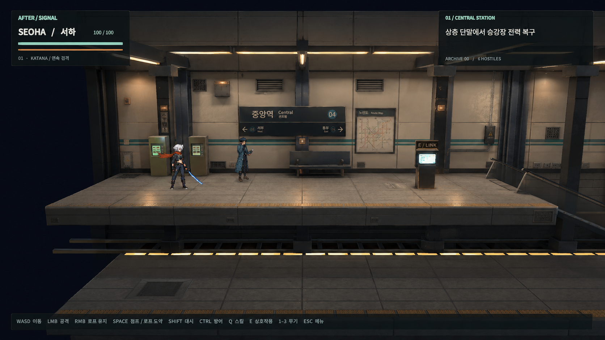
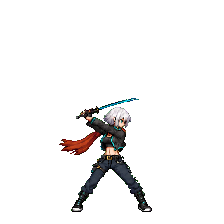
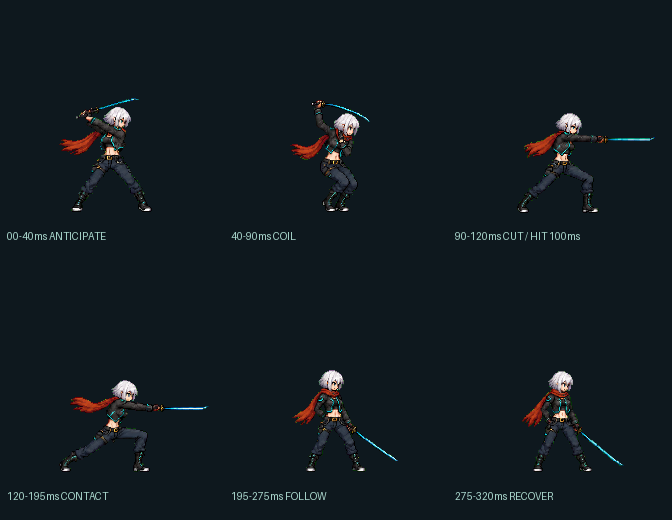
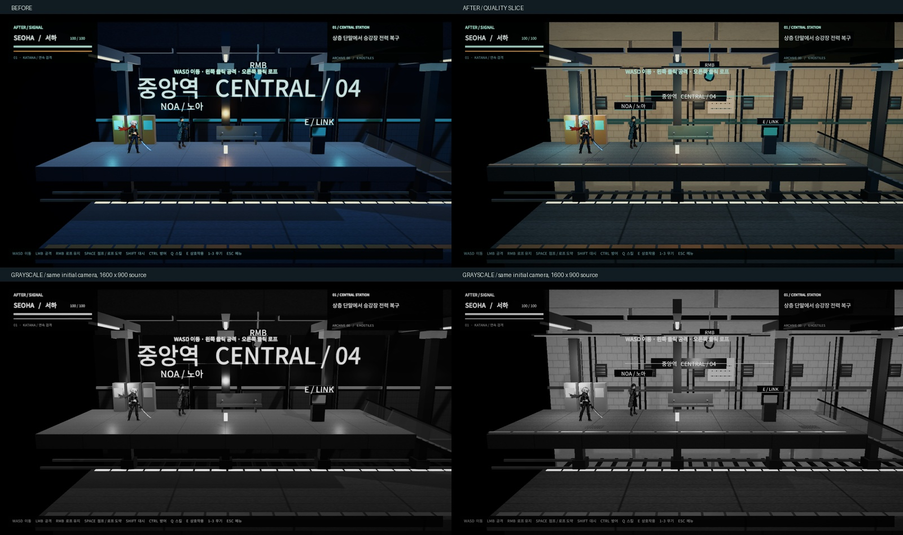

AFTERSIGNAL / NIGHT LINE / 1.1 QUALITY SLICE
역의 공간부터,
한 번의 검격까지.
중앙역의 탐색과 전투를 잇는 약 70초 실제 실행 구간입니다. 기존 4개 씬과 저장 형식은 유지했습니다. 웹 버전 17개 맵의 이식과 마을 확장은 아직 적용하지 않았습니다.
A · 같은 카메라에서 비교
1600 × 900, 같은 입구 위치. 카메라·충돌·발 기준점 유지. 간판, 표면, 조명, 접지 그림자를 국소 수정했습니다.
현재 화면을 바탕으로 만든 목표 시안 (게임 캡처와 구분)

CONCEPT — 실제 구현 화면이 아닙니다. 벽의 온도, 세부 요소 밀도, 작은 간판을 목표로 사용했습니다. 시안의 모든 소품을 구현한 것은 아닙니다.
B · 무편집 실제 플레이와 접촉
BEFORE · 기존 동작과 소리
AFTER · 준비 → 접촉 → 복귀
효과·카메라 충격 OFF 비교 영상
핵심 자세와 적의 경직은 유지됩니다. 위험 텍스트·HUD는 계속 표시됩니다. 위 버튼으로 소리를 끄면 시각 정보만 비교할 수 있습니다.
게임의 실제 URP 카메라와 HUD를 연속 녹화했고, 게임 AudioListener의 출력만 녹음했습니다. 컷 편집·명중 프레임 합성 없음. 30fps 캡처의 readback 비용이 있어 이 영상으로 성능이나 입력 지연을 판정하지 않습니다.
C · 적용한 카타나 핵심 포즈와 시간

0–40ms · 예비동작
224 × 224 / PPU 49 / 발 피벗 (112, 212)
접촉 100ms · 판정 종료 170ms · 전체 320ms
원화 표현과 실제 판정은 별도 시간으로 진행합니다.
이 시안 재생은 히트스톱 없는 헛스윙 기준입니다.

| 무기 | 총 시간 | 접촉 / 활성 종료 | 명중 정지 / 경직 |
|---|
| 카타나 | 320ms | 100 / 170ms | 38 / 210ms |
| 중검 | 560ms | 230 / 340ms | 65 / 320ms |
| 권총 | 240ms | 0 / 25ms, 단발 | 14 / 120ms |
D · 실제 HUD와 가독성
체력·자원은 왼쪽, 현재 목표는 오른쪽, 조작은 하단. 피격 시 체력 지연 바가 남으며 중앙 전투 공간을 비웁니다.

문자까지 픽셀 필터를 적용하지 않았습니다. 한국어 폰트와 패널 규칙은 유지하고 강한 네온 및 월드 간판의 우선순위를 낮췄습니다.
검증과 남은 범위
실행 결과, 출처, 되돌리기는 품질 기록, 측정 조건과 수치는 검증 데이터에서 확인할 수 있습니다. 이 결과를 최종 출시 품질로 판정하지 않았습니다. 반복 구조의 배경 소품, 이동·중검·권총 원화, 마을과 캠페인 확장이 다음 작업 대상입니다.